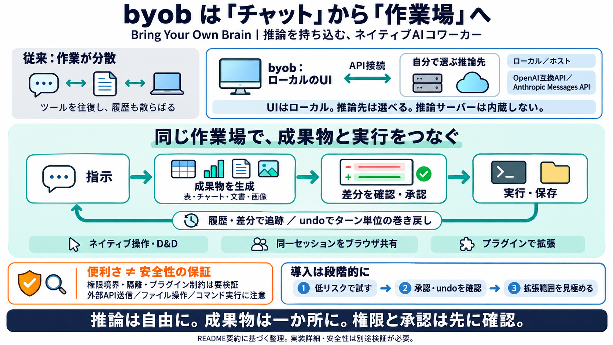

GitHub - Scronkfinkle/byob: Bring Your Own Brain - Local Agent Harness · GitHub
A native desktop AI coworker for the model you already run. Point byob at any OpenAI-compatible endpoint (llama-server, …

byob は「自分のLLM推論環境（Bring Your Own Brain）」を外部から接続して使う、ネイティブ・デスクトップ型のAIコワーカーです。
推論（推論サーバー）は内包せず、OpenAI互換APIや Anthropic Messages API へ接続して動かします。
生成AIのチャットは指示から成果物まで作れますが、ファイル操作・実行・保存・差分確認が別ツールになりがちです。
byob は「同じUI体験の中で、成果物と実行をワークフローに組み込む」ことを狙います。
byob は inference-url と model を指定して、OpenAI互換エンドポイント（例：llama.cpp、Ollama、LM Studio、vLLM等）や Anthropic Messages API に接続します。
そのため、アカウントやバンドル推論を前提にせず、ローカル/ホストの方針に合わせやすいです。
ElectronのようなWeb寄りではなく、GPUでUIを描画するネイティブデスクトップとして説明されています。
ファイルダイアログやドラッグ&ドロップなど、OSネイティブ連携が前提にあります（日本語：ネイティブ連携重視）。
チャットの隣に、スプレッドシート・チャート・Markdown・画像・HTMLアプリ等を“成果物として”並走生成します。
さらにバージョン履歴を持ち、後から差分や修正点を追いやすくします（日本語：履歴で再現性を補強）。
ファイル操作やコマンド実行（例：run_command / run_python）は、承認カード（差分提示）と undo（ターン単位の巻き戻し）を中心に置くとREADMEで述べられています。
自動化と事故防止のバランスを取りにいく設計姿勢です。
READMEでは byob --serve により、同一セッションをブラウザへ公開できると説明されています。
デスクトップのUI体験を維持しつつ、必要に応じてブラウザアクセスも可能という思想です（日本語：セッション共有）。
READMEの範囲で読み取れる「byobらしさ」は、推論持ち込み・ネイティブUI・成果物履歴・承認付き実行・プラグイン拡張の組み合わせです。
ここが揃うことで、実務寄りの自動化ループを回しやすくします。
READMEは「AIエージェントの影響が強い」ことや環境依存（macOS署名・Gatekeeper）への言及があります。
ただしサンドボックス範囲、権限分離、プラグインの実行制約などの詳細は、本文だけでは断定できません。
READMEの説明では byob 自体はデスクトップアプリで、UIはローカルで動きます。
一方で推論はユーザ指定のエンドポイント（ローカルLLM/ホスト/互換API）に送るため、推論先は混在します。
READMEベースでは実行権限の細部は断定できないため、初回は「危険が少ない操作」→「承認が効く確認」→「プラグイン/実行の範囲拡大」の順が安全です。
特にプラグインは重要な攻撃面になり得ます（日本語：段階導入）。
byob は「推論は持ち込み、デスクトップで成果物と実行を扱い、承認と履歴で事故を抑える」方向性が明確です。
ただしセキュリティ/権限/プラグイン管理はREADMEだけでは確定できないため、導入前に設定・承認・権限境界を点検するのが前提です。
A native desktop AI coworker for the model you already run. Point byob at any OpenAI-compatible endpoint (llama-server, …
## Reliability `<div#cookie-banner>` `confirm()` `Ctrl+C` `BYOB_E2E=1 bun test e2e` ## Security `browser_evaluate` (a…
Stars, forks, merged pull requests and Trendshift Trending rank, by day | Day | Stars gained | Forks gained | Merged PR…
JavaScript is disabled in your browser. enable it to enjoy the full features of Tracxn. Tracxn.com Tracxn.com Android A…
BoringSSL is Google's fork of OpenSSL for Chrome/Chromium and Android. This crate provides safe bindings for the Rust p…